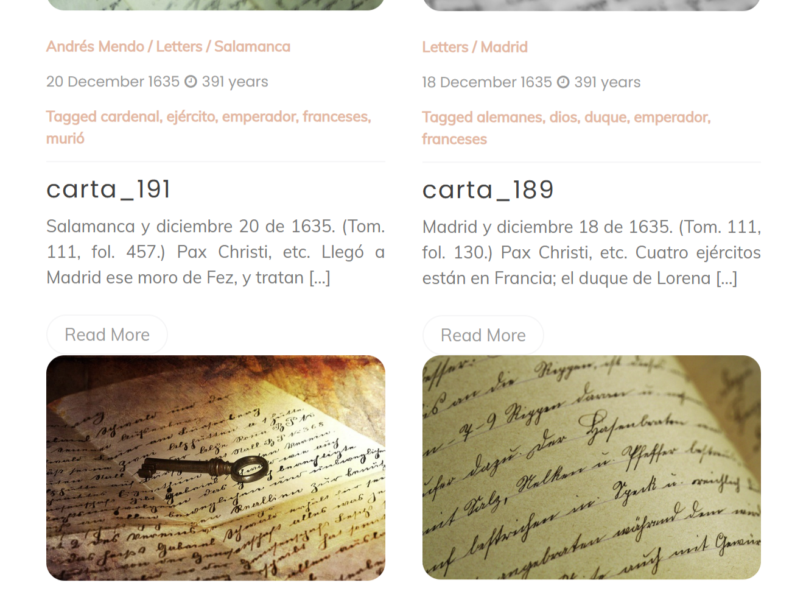
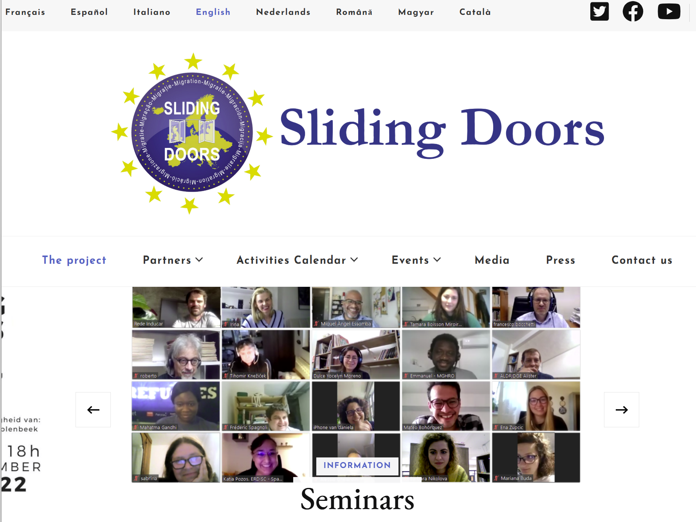

Web & Multimédia
Expérience dans la conception, l'intégration et la gestion de projets web académiques. Mon approche vise à valoriser le patrimoine historique et à diffuser la recherche scientifique à travers des plateformes interactives et des supports audiovisuels.
Édition Numérique & Patrimoine : Lettres Jésuites du XVIIe siècle
Dans le cadre de mon projet final de Master, j'ai réalisé l'édition numérique et la mise en ligne d'un corpus historique de lettres de jésuites. Pour rendre ces archives accessibles et attrayantes, le projet a été structuré et mis en page sous la forme d'un blog interactif, facilitant ainsi la navigation et la lecture pour le grand public comme pour les chercheurs.

Gestion Web Multilingue & Montage Vidéo : Sliding Doors
Participation au projet européen Sliding Doors avec deux missions principales axées sur le numérique :
- Intégration Web (CMS) : Gestion et mise à jour du site web officiel du projet, décliné en 6 langues. Le site original n'étant plus en ligne, une copie est conservée sur The Internet Archive, démontrant la pérennité des données.
- Montage Vidéo : Réalisation, édition et montage d'une vidéo de présentation pour synthétiser les enjeux et les résultats du projet.
